⚠️ Une grille de quatre colonnes. Les images en paysage occupent deux colonnes.
 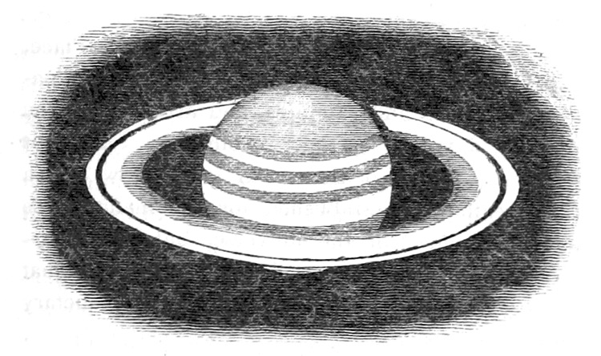
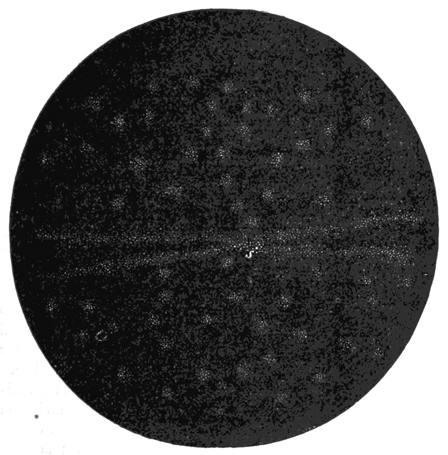
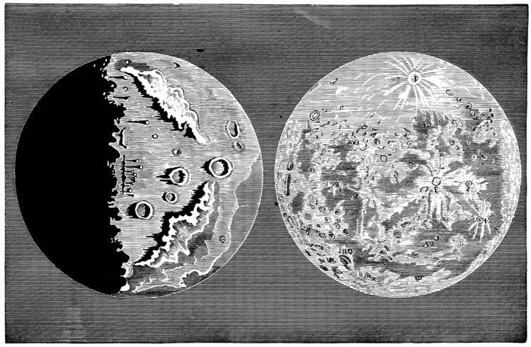
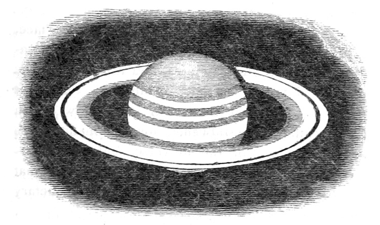
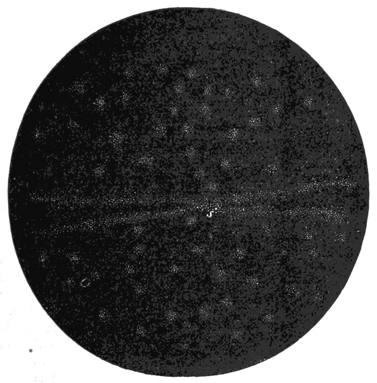
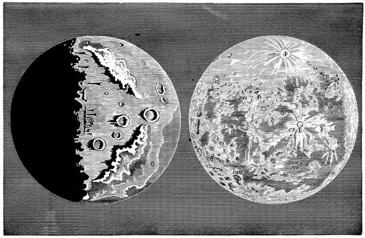


 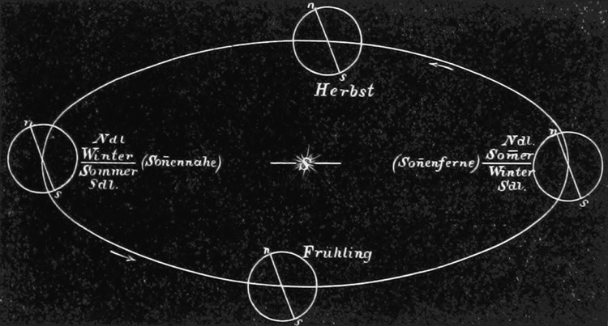
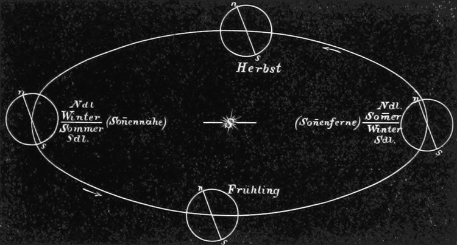
⚠️ Une entête fixe en haut de page.
⚠️ Une grille de quatre colonnes. Les images en paysage occupent deux colonnes.
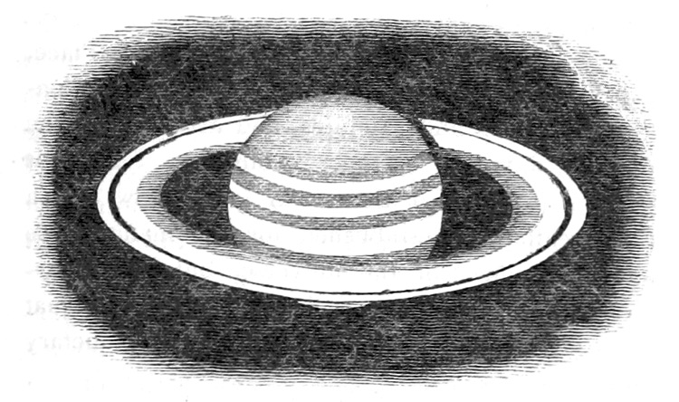
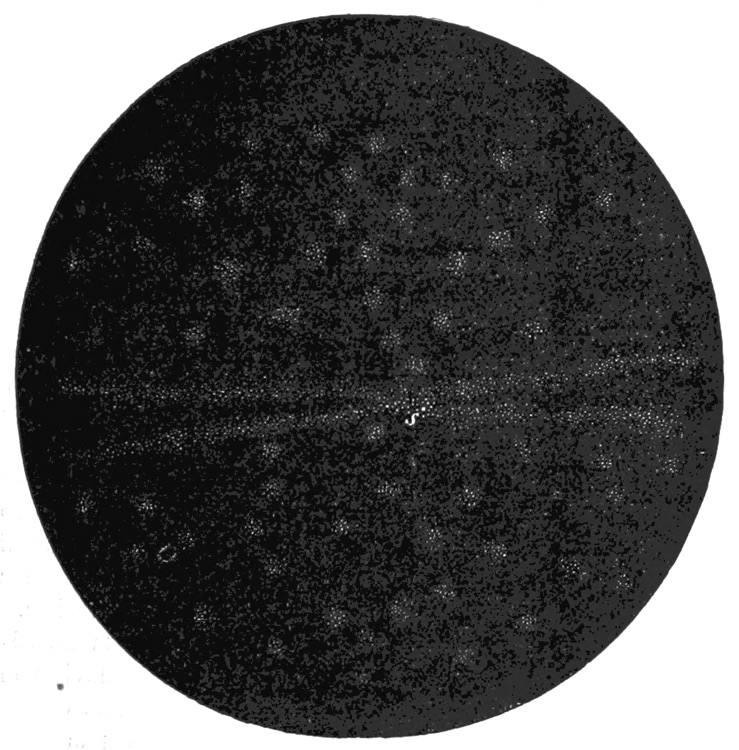
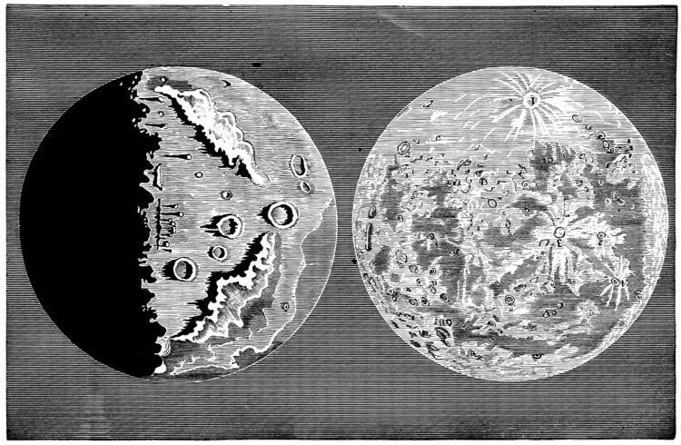
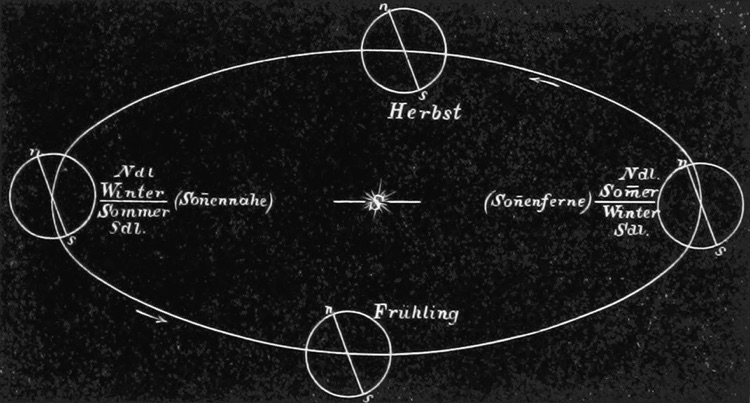